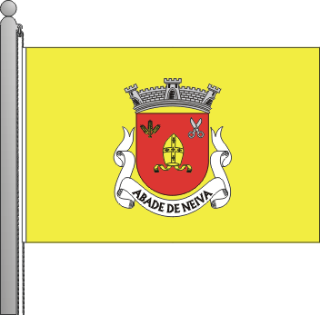
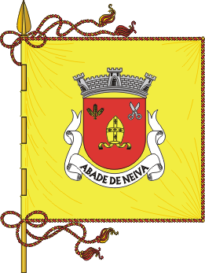

Abade de Neiva
The toponymic determinative "de Neiva" does not originate, and applied to the name of this parish to distinguish from the other parish name, the "land" or county of Vermoim (today, Vila Nova de Famalicão) and then Abade de Vermoim telling if this Abade de Neiva, to exist in the "land" or council of Neiva (already in the thirteenth century head in Barcelos).
It is wrong to say "do Neiva" since it has nothing with the river of that name, but with the medieval circumscription so called, by which it must be said "de Neiva". The name of the parish was simply Abade or rather Santa Maria de Abade, one of the parishes of the "land" or medieval judged Neiva. It is not easy to know exactly the place's name Abade: the Inquisitions 1258 now call it in Latinism Abbade and 1220 exactly the same. This is not a genitive personal name, as Abadim, which is diminutive of the name, the form, therefore, must be taken from Abbate initially "abba," the abbot.
(Grande Enciclopédia Portuguesa e Brasileira)
Churches and Chapels
 Santa Maria De Abade De Neiva
Santa Maria De Abade De Neiva
The Church of Santa Maria do Abade de Neiva is located in the parish of Abade de Neiva, municipality of Barcelos, Braga district, in Portugal.
Chapel of Santo Amaro
The Chapel of Santo Amaro is located in the parish of Abade de Neiva, municipality of Barcelos, Braga district, in Portugal.
Chapel of Santa Margarida
The Capela Santa Margarida is located in the parish of Abade de Neiva, municipality of Barcelos, Braga district, in Portugal.
Viewpoints

Penedo da Moura
Penedo da Moura is located in the parish of Abade de Neiva, municipality of Barcelos, Braga district, in Portugal.
About this parish
| Administration | |
| Type: | The Parish Council |
| President: | Manuel Martins Abelheira (PS) |
| Demography | |
| Area | |
| Total: | 7,5km2 |
| Population (2011) | |
| Total: | 2024 |
| Density: | 269,9hab/km2 |
| Other Information | |
| Email: | jfabadedeneiva@gmail.com |
| Website: | www.abadedeneiva.maisbarcelos.pt |
| Patron Saint: | Nossa Senhora da Abadia |
| Festivities | |
| Nossa Senhora da Abadia: | 1st Weekend after day August 15 |
| Santo Amaro: | 15 of January |
| Parish Day: | 15 of August |
Heraldry

Guns - Shield of red, gold miter abbey; in chief three ears of gold, put in ratchet and passed on foot, the right hand and a silver scissors, open the sinister. Silver mural crown with three towers. Listel white with the legend in black uppercase:” ABADE DE NEIVA “.

Flag - Yellow, cords and tassels of gold and red. Rod and cast gold.

Banner - used in ceremonies and parades.